Project 1: Image Filtering and Hybrid Images

 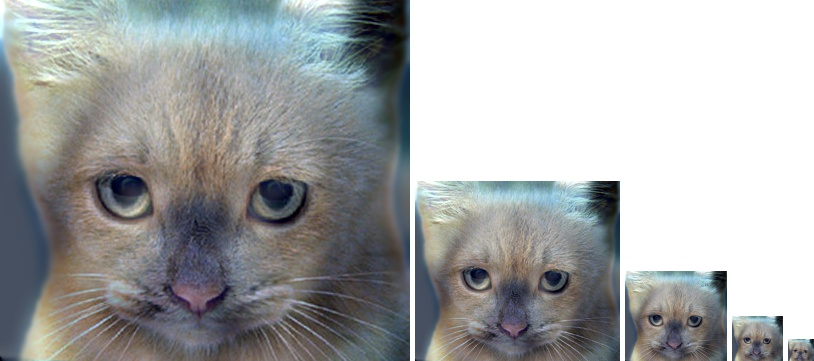
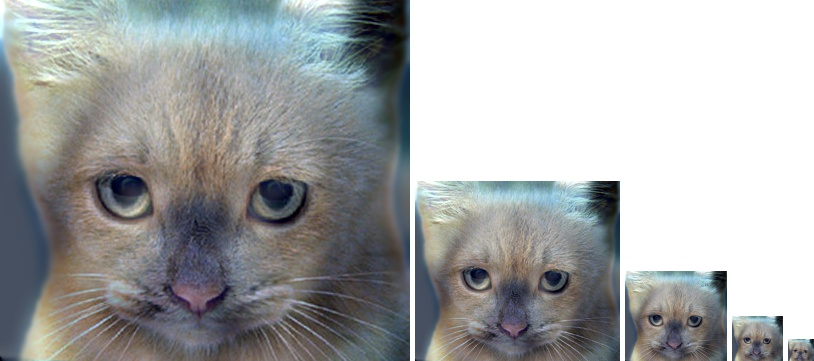
Top: Original Images, a cat and a dog.
Bottom: Hybrid Images, a cat at close and a dog at distance.
In this project, we aim to implement Image Filtering in Python, using Numpy, and further, use this Image Filtering to create Hybrid Images.
Image Filtering
Image Filtering is a way of modifying images to make them look brigher, sharper, smoother, blurred, etc, by changing the pixels in some manner. In computational terms, we apply a filter to an image by doing linear operations on each pixel using it's neighbouring pixels. There can be non-linear ways of doing image filtering, however, the scope of this project is to do linear filtering on 2D images.
Linear Filters modify each pixel (x,y) by computing the sum of surrounding pixels weighted by the filter. The filter sizes are odd for this project to keep calculations limited to the center element. This n × m filter window moves row-wise in the image and modifies each pixel. But what do we do about the pixels on edges?
Padding is a technique used to add pixels to the original image so that the extra pixels can be used to cover the pixels at edges. While, there are various ways of padding the image, this project uses reflect, which adds a reflection of the edges as the extra pixels.
Therefore, the filtering algorithm of our function my_imfilter(image, filter) would do the following steps:
- Check if the filter dimensions are both odd, so 25 × 1 or 5 × 5 is okay, but 5 × 4 would not be allowed.
- Let's say that the filter dimensions are n × m. Therefore, to cover the (0,0) pixel in every layer, the image needs to be padded with (n-1)/2 and (m-1)/2 pixels on respective axes.
np.padis a function that does this quickly and allows for an argument for type of padding,reflecthas been used for this project. Note that we add n-1 and m-1 pixels so as the extra row and column is already present in the image and we are only surrounding it. - After padding the image, the shape of the image is changed from (rows, columns, layers) to (rows + n - 1, columns + m - 1, layers). We want to modify only the internal (rows, columns, layers) pixels and therefore, we go row wise in each layer beginning from ((n-1)/2, (m-1)/2) pixel as it maps to (0,0) of the original image in each layer.
- Using
np.multiply, element-wise multiplication of (n,m) subsection of image is done with the (n,m) shaped filter. Then,np.sumis used to sum the elements of resulting (n,m) matrix and the value is stored in a new image matrix,filtered_imageinitialised to the shape of original image - Row wise iterations of the padded image compute the weighted sum for every pixel and then the entire process is repeated for each layer.
- Note that this algorithm works for all layers over 1 but if the number of layers is 1, we need to add a condition to avoid the third dimension in the entire filtering code.
To verify this algorithm using visual inspection, the function is tested on a few filters with known effects.
Identity Filter
Identity Filter is a filter that doesn't modify the image at all. So mathematically, it is a matrix with all zeroes except one 1 at the center. Using this filter would mean multipying all surrounding pixels by 0 and only the center pixel by 1, leaving the sum to be same as the original value. Applying a 3 × 3 identity filter to a sample motorcycle gives the following result:

As expected, the images don't differ at all and the filter function works for this case.
Small blur with a box filter
To blur the image, we take a n × n filter with value of each element as n-2 so that the sum of all elements is 1. Applying this filter would mean averaging each pixels by surrounding pixels of size n × n.
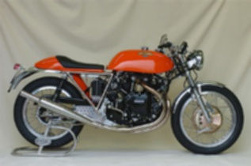
As we have used 3 × 3 sized filter, the blurring effect is very small.
Large blur
Using the same technique as small blur, we can increase the blurring by changing n to 21, causing a pixel to be an average of 441 pixels resulting in similar pixel values for a greater area. The effect is, however, very boxy:
To make the blurring effect smooth, Gaussian filters can be used. As they are separable, sequential filtering can be done on each axis using 1-D filters. This gives a smoother blurring effect as the smoothening is exponentially adjusted instead of linearly.
The
ksizeparameter of the Gaussian kernel defines the size of 1-D filters.ksizevalue was set to 25 to create the images above. At this value, we don't appreciate the advantage of separability as time taken to do filtering on each axis is more than them naive filtering using 25 × 25 kernel. However, we can see that this becomes untrue when we increase theksize. At a value of 75, the number of operations done naively overshoot separate ones, the time taken by separate 1-D filters is 3.14 seconds, while naive filter takes 3.43 seconds. Therefore, separability is a useful mathematical tool for large blurring or for blurring of larger images.-
Sobel Filter
Sobel Filters are used to do edge detection. The first Sobel Filter removes horizontal gradients vertical edges of the image.
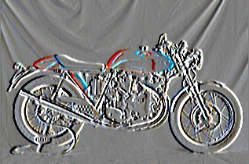
Now, we remove vertical gradients to see horizontal edges of the image.
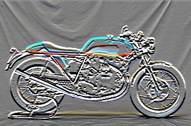
We can verify that the filter works as in the second image, the edge of the bike's top can be distinguished while in the first image, it's hardly visible.
-
High pass filter (discrete Laplacian)
High pass filter eliminates low frequencies in an image. It's done in two ways, first we use a Laplacian filter that mathematically scoops each pixel.
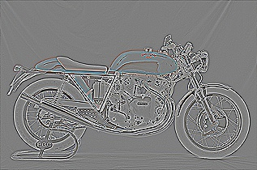
The other way of creating a high pass filter effect is by subtracting an image's low pass filtered version from itself.
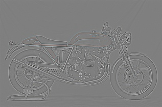
Hybrid Images
Hybrid Image is an image that looks like one object at a close distance or large size but like a different object on moving far away or reducing the image size. The interpretation of the image is a function of its viewing distance and exploits the multiscale perceptual mechanism of human vision.
Each image is a sum of various frequencies in a Fourier spectrum and we can use this principle to separate the high frequencies of one image and merge it with the low frequencies of another image. In this project, hybrid images were created using a simplified version of the SIGGRAPH 2006 paper by Oliva, Torralba, and Schyns.
Image I1 and I2 are passed through a low pass filter G, LowI1 and LowI2. To convert Image I2 to a high-pass filtered verion, LowI2 can be subtracted from it resulting in HighI2. The assumption here is that an image is only made up of low frequencies and high frequencies, defined by a cut-off frequency. Now, LowI1 and HighI2 can be summed element-wise to create a hybrid image.
Here, we can vary the cut-off frequency to see how well the images separate at a distance. With cut-off frequency 2, the standard deviation of the Gaussian filter becomes 2. The resulting size of the filter is 9 × 9.
Original Images: a cat and a dog.
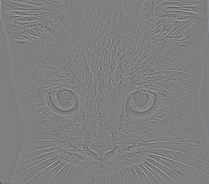Low pass filtered image of a dog and high pass filtered image of a cat
Bottom: Hybrid Images, a cat at close and a dog at distance.
At a cut-off frequency this low, most of the details of the dogs face are preserved and the cat is hardly distinguishable. The blurring effect of the low pass filter is evidently very small. Merging these two images will show the dog's face at a close distance as well because the definition of lower frequencies is badly set.
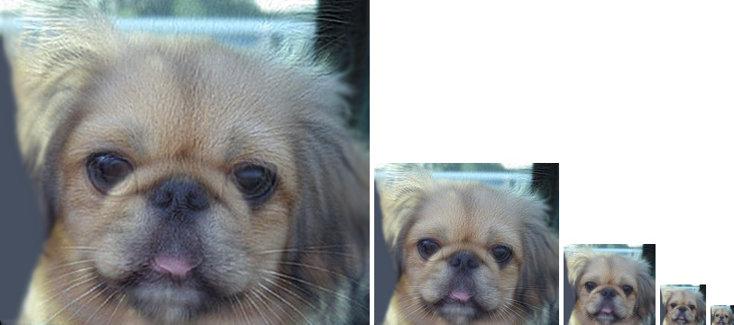By adjusting the cut-off frequency to 9, optimal features of both faces are preserved at filtering:
Original Images: a cat and a dog.
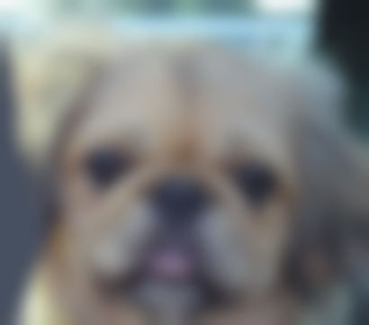 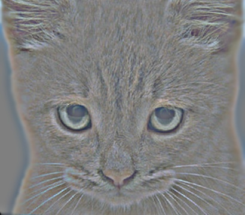Low pass filtered image of a dog and high pass filtered image of a cat
Bottom: Hybrid Images, a cat at close and a dog at distance.
As expected, the dog's face is a lot more blurred and the cat's features are preserved as well. The detailing has increased on the cat's face and now merging the two images gives a good hybrid image. At the 4th image, dog can be seen while at first two, cat is seen very clearly.
The hybrid image may have values out side the [0,1] range and np.clip is used to clip those values to 0 or 1. This may happen
because of manipulation while merging the two images.
Cut-off frequncy will also need to be tuned based on the image being filtered for low-frequncies or high. If we reverse the order of images, run a low pass filter on cat's face and high pass filter on dog's face, the results aren't as pleasing but they seem to be better at a cut-off frequency of 8 and not 9 because we need to preserve more of the cat's face.
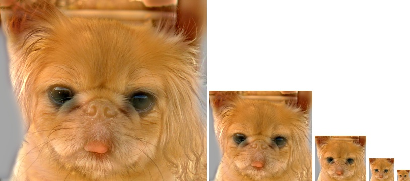
Conclusion
The goal of this assignment was to understand 2-D linear filtering and use the concept to create a hybrid image that works because of separability of low frequencies and high frequencies of image and the perception of human vision. The challenging part of the project was to correctly pick indices for element-wise multiplication. With trial and error, reflection seemed to work as the best way of padding. I also learnt the advantage of separability and it's impact on run time. Finally, the cut-off frequency tuning was very interesting to do.